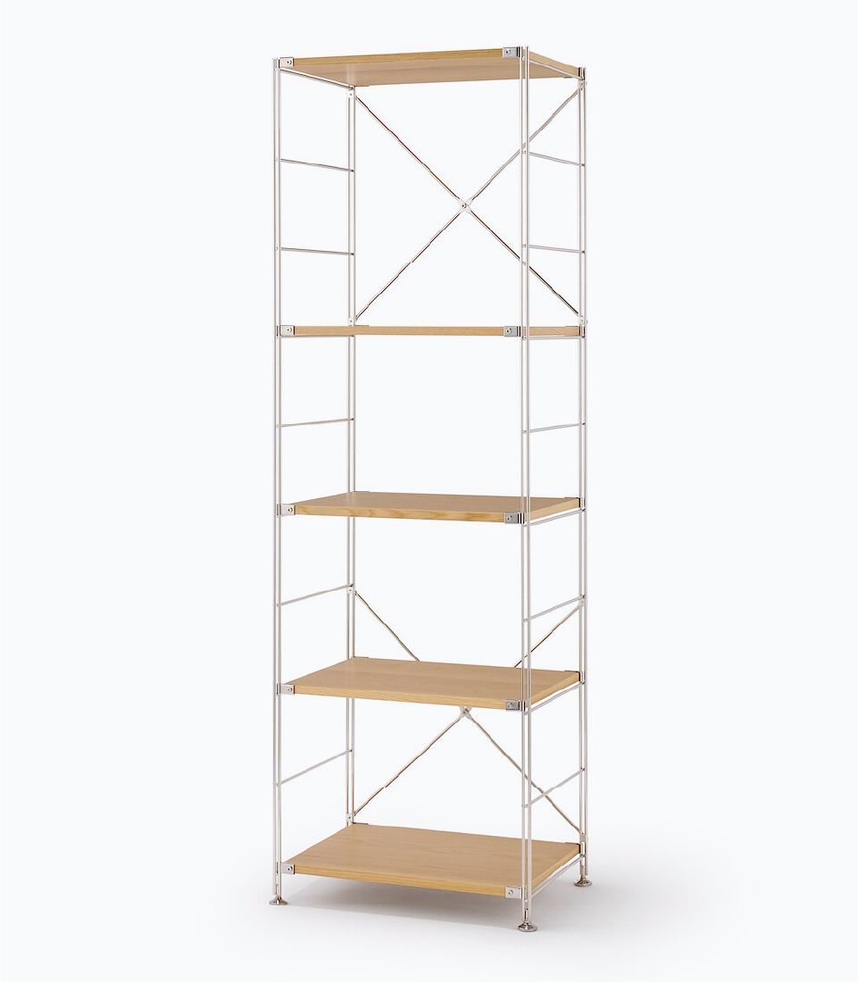

왼쪽은 무인양품 SUS 떡갈나무 기본 L, 오른쪽은 아레초 오크 수납장과 검정 오디오, 거실 바닥에는 떡갈나무·오크·스테인리스 톤을 따뜻하게 묶어주는 노미아(NOMIA) [new] t4 - 오트밀 러그(150×200cm · 85,900원 · 무료배송)를 깔았어요. 2단 와이드 서랍은 바닥에서 반 칸 정도인 약25.5cm를 띄워 놓았고, 최상단 판은155cm로 낮춰 보유 헬멧과 작은 샌드색 도자기 오브제1개를 올렸어요.118cm 칸에는 핸드드립 도구,81cm 칸에는 LP판 약4장만 수납하고 프렌즈 액자는 복도 원위치에 두었어요.
![노미아 [new] t4 - 오트밀 러그 3sizes 실제 제품 사진](selection-assets/nomia-t4-oatmeal-rug.jpg)
E안 3D 적용 · 1순위 추천: 노미아 [new] t4 - 오트밀 러그 · M (150×200cm)
바깥쪽 웜 토프베이지 테두리와 안쪽 크림 프레임, 짙은 브라운 스티치 점선 테두리, 중앙 4×6 톤온톤 오트밀 체크가 어우러져 무지 떡갈나무·아레초 오크와 블랙 오디오 포인트를 따뜻하게 묶어 줍니다.
소재: Polyester · t4 등급(약1cm 부드러운 단모, 쿠션감·논슬립·워셔블)
85,900원
기본배송 무료 (100×150 기본 42,900원 + 150×200 옵션 +43,000원 · 기존 155,400원 대비 -69,500원)
노미아 공식 상품 보기 ↗

노미아 대안 2 · 내추럴 스트라이프: 노미아 t2 - 모스 러그 · M (150×200cm)
샌드 베이지 바탕에 세이지 그린·브라운·뮤트 블루 가로 스트라이프가 들어가 창가 트리·화분과 오크 가구 사이에 산뜻한 포인트를 줍니다. t2 등급(탄탄하고 관리가 쉬운 단모).
밝은 프렌치 프레임 스타일인 노미아 [new] t4 - 시폰 러그(150×200cm · 85,900원) ↗도 같은 가격으로 선택할 수 있습니다.
85,900원
기본배송 무료 (100×150 기본 45,900원 + 150×200 옵션 +40,000원)
노미아 공식 상품 보기 ↗

왼쪽 · 무인양품 SUS 기본 L
선택 옵션: 떡갈나무 / 기본 L (58cm) 427
폭58 × 깊이41 × 높이175.5cm
MDF+떡갈나무 베니어 · 선반5장 · 스테인리스 프레임
379,000원
기본배송50,000원. 사진은 판매자의 기본 조립 모습이며, E안은 같은5장의 높이를 조정한 계획입니다.
실제 제품 보기 ↗

오른쪽 · 아레초930 오크
폭93 × 깊이40 × 높이75cm
슬라이딩 문2개 · 낮은 다리형 수납장
368,000원
기본배송 무료. LP판 내부 수납 유효 높이·하중은 미확인입니다.
실제 제품 보기 ↗

추가 · 목제 수납 케이스 2단 와이드
떡갈나무 · 폭52 × 깊이37 × 높이34.5cm
받침 선반 위에 놓는 케이스 · 58cm SUS와 조합
81,900원 현재 품절
사진 속 금속 선반은 별도입니다. E안은 사진보다 낮춰 케이스 밑면 약25.5cm·윗면60cm로 놓았어요. 가격은 품절 상품의 표시가를 준비금으로 반영했으며 재입고 후 확인이 필요합니다.
서랍 제품 보기 ↗

1순위 추천 (선반+수납 일체형) · 장미맨숀 루이스 원목 선반 라탄수납장 내추럴
폭80 × 깊이42.5 × 높이170cm · 고무나무 원목 + 케인 라탄 미닫이 도어 + 철제 꺽쇠
하부 수납장 상판 높이가 75.5cm로 오른쪽 더레인 아레초930(높이 75cm)과 상판 라인이 거의 정확히 일치합니다! 상판을 핸드드립 커피 스테이션으로 쓰면서 상부 3단 오픈 선반(깊이 20cm·50mm 간격 높이 조절)에 헬멧과 도자기를 진열하고, 하부 미닫이장에 자잘한 짐을 숨길 수 있어요.
460,500원 (무지 대비 -50,400원)
상품가 430,500원 + 서울/수도권 착불배송 30,000원 · 평점 4.7 (리뷰 383개) · 상부 레일 벽 고정 권장
오늘의집 상품 보기 ↗

디터람스풍 월 유닛 완제품 · 오투가구 피카 월 캐비닛 S (슬라이딩형)
폭80 × 깊이37.5 × 높이170cm · 마호가니 원목 다리 + 무늬목 바디 + 스틸 손잡이
비초에 606 스타일의 벽선반 감성을 자립형 원목 다리 프레임으로 구현한 스테디셀러입니다. 상부 2단 오픈 선반 + 중부 매거진/LP 전시 렉 + 중하부 미닫이 수납장 + 하부 선반까지 역할 분담이 완벽하고 전문 기사님이 무료로 설치해 줍니다(색상은 아레초 오크보다 반 톤 진한 티크 브라운).
525,000원 (쿠폰 적용 시 493,500원)
무료배송 · 무료설치 · 평점 4.5 (리뷰 265개 / 폴딩형 425개)
오늘의집 상품 보기 ↗

아레초930 동일 브랜드 · 더레인 핀 화이트 오크 3단 책장 선반장 (1유닛)
폭86 × 깊이30 × 높이88.5cm · 화이트 피그먼트 오일드 오크 프레임 + 오크 베니어 선반
오른쪽 더레인 아레초930 오크와 같은 브랜드(더레인) 제품이라 밝은 오크 나뭇결과 톤이 가장 자연스럽게 이어집니다. 높이 88.5cm의 중저상형 3단 오픈 선반이라 거실 시야가 탁 트이고, 벽 타공이나 전도 걱정이 전혀 없습니다.
263,000원 (무지 대비 -247,900원)
1유닛(3×1) 옵션 기준 · 무료배송 · 평점 4.9 (리뷰 37개)
오늘의집 상품 보기 ↗

우드+스텐 프레임 통일 · 코헨(COHEN) 피엘 Cabinet
폭71 × 깊이40 × 높이100cm · 상부 양문형 우드 도어 수납장 + 하부 스테인리스 헤어라인 프레임 다리
깊이 40cm가 아레초930 및 F안 코헨 유닛2와 1mm 오차 없이 동일하며, 우드 바디에 스텐 다리를 결합한 디자인 언어가 옆 아레초930과 찰떡처럼 어울립니다. 높이 100cm 상판 위를 핸드드립 바·헬멧 진열대로 쓰고 내부에 깔끔하게 숨김 수납하기 좋습니다.
440,000원 (무지 대비 -70,900원)
상품가 390,000원 + 서울 배송비 50,000원 · 주문제작 가구
코헨 공식몰 보기 ↗

오픈선반+플랩도어+LP칸 · 장미맨숀 리브 원목 책장 01 내추럴
폭100 × 깊이35 × 높이110cm · 고무나무 원목 + MDF (내추럴)
상부 2단 오픈 선반 + 하부 좌측 플랩도어 숨김 수납장 + 하부 우측 3칸 세로 LP/매거진 꽂이가 하나에 다 들어간 구성입니다! 침실 리브 화장대·거울과 같은 시리즈라 집 전체 톤이 통일되고, 높이 110cm라 벽 고정 없이 안정적으로 자립합니다.
373,700원 (무지 대비 -137,200원)
상품가 343,700원 + 서울/수도권 착불배송 30,000원 · 평점 4.8 (리뷰 97개)
오늘의집 상품 보기 ↗

무지 SUS 감성 실속형 · 무인양품 SUS 떡갈나무 기본 M (서랍 제외)
폭58 × 깊이41 × 높이120cm · MDF+떡갈나무 베니어 선반 4장 + 스테인리스 프레임
무인양품 특유의 떡갈나무+스테인리스 디자인과 58×41cm 바닥 면적을 그대로 유지하면서, 높이를 175.5cm에서 120cm로 낮춰 거실 답답함과 전도 위험을 줄이고 품절된 서랍 없이 깔끔하게 구성하는 실속안입니다(현재 재고 12개 즉시 구매 가능).
329,000원 (무지 L+서랍 대비 -181,900원)
상품가 279,000원 + 기본배송 50,000원 · 재고 12개
오늘의집 상품 보기 ↗

무지 SUS L 1:1 치수 도어형 · 데스커 600폭 5단 깊은 수납형 책장 (하부도어형)
폭59 × 깊이41 × 높이174cm · 라이트오크 + 화이트 도어 (DSCC465S)
무지 SUS L(58×41×175.5cm)과 가로·깊이·높이가 1cm 이내로 완전히 동일한 1:1 치수 대체재입니다! 일반 책장(깊이 29cm)과 달리 깊이가 41cm로 깊어 헬멧·커피 도구가 여유 있게 들어가고, 하부 여닫이 도어 수납장이 기본 포함됩니다.
236,000원 (무지 대비 -274,900원)
무료배송 · 데스커 전문 시공 기사 무료 설치 · 평점 4.7 (리뷰 139개) · 컴퓨터 책상(데스커)과 브랜드 통일
오늘의집 상품 보기 ↗

원목 5단+2서랍 / 가성비 스틸 · IKEA IVAR 이바르 (서랍형) & FJÄLLBO 피엘보
이바르: 폭89 × 깊이30 × 높이179cm (197,900원) · 소나무 원목 선반 5장 + 원목 2단 서랍 기본 포함
무지 SUS L+2단 서랍과 똑같은 '키큰 5단 오픈 선반 + 중단 2단 원목 서랍' 구조를 19만원대에 구현한 정품 세트입니다.
피엘보: 폭51 × 깊이36 × 높이136cm (99,900원) · 소나무 원목 상판 + 블랙 스틸 프레임의 초가성비 대안(피엘보 보기 ↗).
197,900원 / 99,900원 (최대 -41만 원 절감)
이케아 배송비 별도 · 이바르는 수납장 결합형(80×30×120cm · 185,000원) 옵션도 선택 가능
IKEA 공식몰 보기 ↗
상품 가격·옵션 확인일은2026.10.28(노미아 러그·SUS 대체 후보 8종은 2026.11.3), 배치 설명 수정일은2026.11.3입니다. 판매가·재고·배송 지역 조건은 주문 시 달라질 수 있어요. 위 사진 속 촬영 소품은 가구에 포함되지 않습니다.
E안 전체 구매 계획
4,963,100원 (노미아 러그 반영 시 4,893,600원)기준 39품목 계획액은 4,963,100원이며, 거실 러그를 이씨라메종(155,400원)에서 노미아 [new] t4 - 오트밀 러그 150×200cm(85,900원·무료배송)로 변경하면 69,500원이 절감되어 4,893,600원입니다. L 선반379,000원 + 서랍81,900원 + 합배송50,000원 =510,900원, 오른쪽 아레초368,000원을 합친 수납 코너 계획비는878,900원입니다.
서랍 품절로 같은 날 합배송은 아직 확정되지 않았습니다. 분리배송이면50,000원이 추가될 수 있어요. 총39개 품목이며 예비비30만원과 큐커 계획비를 포함합니다. 냉장고·매트리스·무선청소기 본체와 미확정 비용은 별도입니다. 핸드드립 도구와 최상단 도자기 오브제는 제품·가격 미정으로 위 총액에 포함하지 않았습니다. 전체 내역 보기 ↗